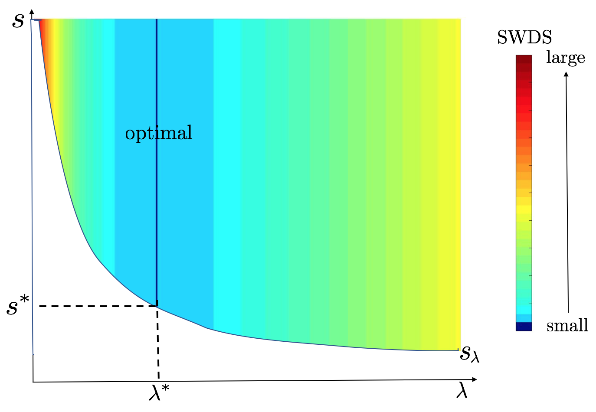
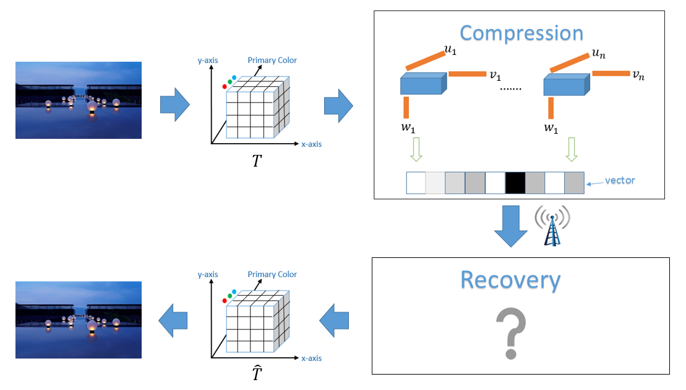
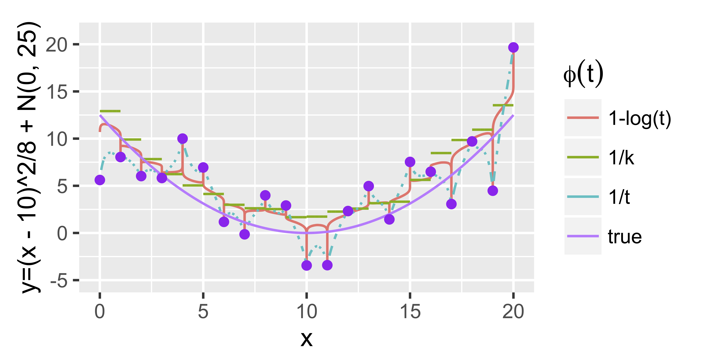

This page summarizes Dr. Cheng's main contributions in mathematical statistics, high dimensional statistics and big data theory, plus his ongoing works in deep learning.
Mathematical Statistics: Together with his collaborators, Dr. Cheng has established bootstrap consistency for general semiparametric models (Cheng & Huang, 2010), developed a first set of local and global inference procedures for smoothing spline models (Shang & Cheng, 2013), together with the corresponding nonparametric Bayesian inferences (Shang & Cheng, 2018). The second work was established by inventing a new technical tool called as "functional Bahadur representation," and the third work rigorously proved that the “data washes out prior” phenomenon still exists in the nonparametric regime under a Bayesian version of “under-smoothing” condition. All three representative works provide fundamental inferential theory in general semi- or non-parametric context;
High Dimensional Statistics: Together with his collaborators, Dr. Cheng has developed Gaussian approximation results for high dimensional dependent data (Zhang & Cheng, 2014 and Zhang & Cheng, 2018). A particularly important application is to make simultaneous inferences on high dimensional linear models (Zhang & Cheng, 2017). Another work (Yu et al., 2018) revealed an “one-way interaction phenomenon” in estimating high dimensional partially linear additive models. Specifically, minimax risk for smooth nonparametric estimation can be slowed down to the sparse estimation rate whenever the smoothness of the nonparametric component or dimensionality of the parametric component is sufficiently large. The phase transition diagram is demonstrated in Figure 1 below;
Figure 1: Yu et al. (2018) considered estimating $Y=X'\beta_0+f_0(Z)+g_0(U)+\epsilon$, where $\beta_0\in\mathbb R^p$ with at most $s_0$ non-zero elements and the smoothness of $f_0$ is $\alpha$. The minimax lower bound for estimating $f_0$ is $n^{-\alpha/(2\alpha+1)}$ when $\alpha, p, s_0$ and $n$ fall into smooth regime. Otherwise, the minimax lower bound becomes $s_0\log(p/s_0)/n$ in the sparse regime.
Big Data Theory: The increased availability of massive data sets significantly helps discover subtle patterns in their distributions, but also imposes overwhelming computational challenges. A question of practical relevance is how one should allocate a limited computational budget to obtain the best possible statistically-based solution. This requires a sharp characterization of statistical-and-computational trade-off. We use the divide-and-conquer algorithm for smoothing spline as a prototypical example to illustrate this point. Shang & Cheng (2017) discovered a phase transition phenomenon for the number of distributed computing units that ends up being a simple proxy for computing cost. Specifically, a sharp upper bound for the number of deployed machines is established: when the number is below this bound, statistical optimality (in terms of estimation or testing) is achievable; otherwise, statistical optimality becomes impossible. These sharp bounds partly capture intrinsic computational limits of the distributed algorithm from a statistical perspective. An even deeper insight is that sample splitting may be viewed as an alternative form of regularization, playing a similar role as smoothing parameter. Please see Figure 1 for an illustration of this point.
Figure 2: Shang & Cheng (2017) considered estimation and testing of $f$ in $Y=f(X)+\epsilon$ via divide-and-conquer algorithm. Define $N$, $\lambda$ and $s$ as the entire sample size, smoothing parameter used in each machine and the total number of machines, respectively. Two lines indicate the choices of $s\asymp N^a$ and $\lambda\asymp N^{-b}$, leading to minimax optimal estimation rate (left) and minimax optimal testing rate (right). Whereas $(a,b)$'s outside these two lines lead to suboptimal rates.
The statistical-and-computational tradeoff phenomenon has also been observed in the random projection method (Liu et al., 2018) and early stopping method (Liu & Cheng, 2018) in terms of the minimal surrogate dataset (after random projection) and the optimal number of iterations, respectively. Please see Figure 3.

Figure 3: Liu et al. (2018) considered nonparametric testing for $f$ in $Y=f(X)+\epsilon$ via random projection. The horizontal axis $\lambda$ is the smoothing parameter used in kernel ridge regression, and the vertical axis $s$ is the size of surrogate dataset. SWDS means the strength of the weakest detectable signals. The vertical line labeled by “optimal” indicates the choices of $\lambda$ and the corresponding smallest sample size $s^*$ that achieve the smallest SWDS. The right plot illustrates different “bias-variance” tradeoff in testing and estimation, thus leading to different stopping time: $\widetilde T$ v.s. $T^*$ (Liu & Cheng, 2018).
Large dimensional tensor data
is a particular type of big data Dr. Cheng has investigated in depth, e.g., sparse tensor decomposition (Sun et al., 2017) and tensor recovery (Hao et al., 2018). The latter aims to recover an unknown tensor $\mathcal{B}$ from different types of sketchings. Specifically, we consider
\begin{eqnarray*}
\label{model}
y_i = \langle\mathcal{B}, \mathcal{X}_i\rangle+\epsilon_i, \ i=1,\ldots, n.
\end{eqnarray*}
Here, $\mathcal{X}_i$ is an observable sketching tensor with either symmetric or non-symmetric form. The former form corresponds to compressed measurements for high-order tensor data and the latter to a tensor representation of high-order interaction; see Figure 4 for an illustration. By imposing the low rank structure of $\mathcal{B}$, we sketch the tensor along three different modes individually, which leads to the “cubic sketching” method. We prove that the block-wise gradient descent estimate converges to global optima with a geometric rate in optimization error and minimax optimal rate in statistical error.

Figure 4: Illustration for tensor image compressing and tensor formulation of interaction terms.
In the new area of Deep Learning, the first attempt Dr. Cheng has made is to turn the well known generative adversarial network (GAN) into a statistical sampling procedure called as "Stein Neural Sampler" (Hu et al., 2018). Such a GAN-based sampling method takes advantage of the large capacity of neural network. Theoretical and empirical results suggest that our samplers are asymptotically correct, experience less convergence issue and generating samples instantaneously. Please see Figure 5 for a simple comparison with other methods.
Figure 5: 2D Gaussian mixture with 8 components. The red dashed lines are the target density and the green dots are generated samples at 0, 1000, 2000, 5000, 10000 iterations, respectively.
In deep learning, it is observed that carefully designed deep neural networks achieve small testing error even the training error is close to zero. One possible explanation is that over-fitting may greatly reduce the estimation bias, while not increase the estimation variance too much. Xing et al. (2018) tried to understand this over-fitting phenomenon using the simple nearest neighbor algorithms under the interpolation constraint; see the left panel of Figure 6. We proved that such interpolated algorithms can still achieve the minimax optimal rate in both regression and classification regimes as long as weights are carefully chosen. Moreover, in quite a few scenarios, the interpolated algorithms can be even better than the traditional $k$-nearest neighbor method; see the right panel of Figure 6.

Figure 6: In the left plot, $\phi(t)$ represents the weight function in the nearest neighbor regression estimate. In the right plot for classifying $N(0, I_5)$ v.s. $N(\gamma 1, I_5)$, solid line and dashed line represent the optimal excess risk for classification of $k$-NN and interpolated-NN, respectively.